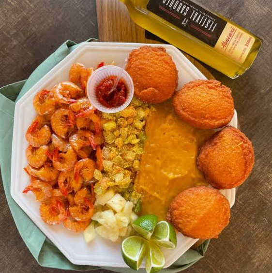
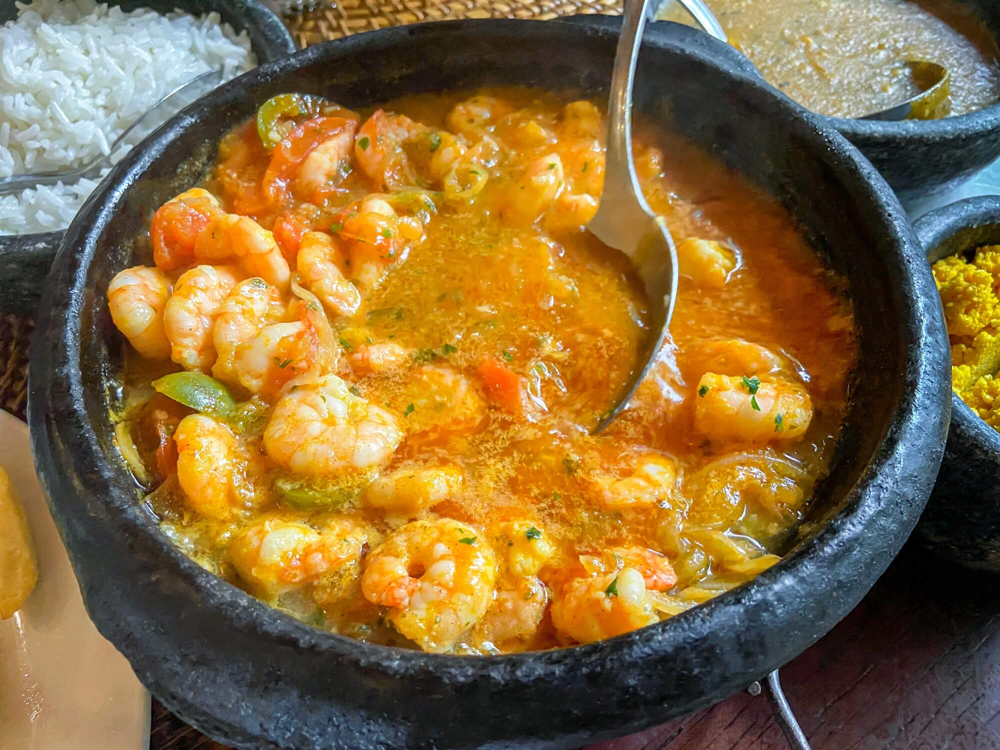
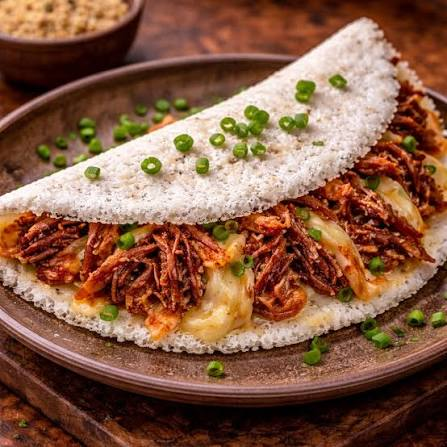
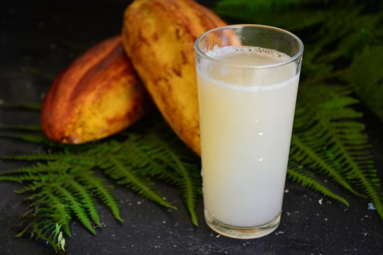
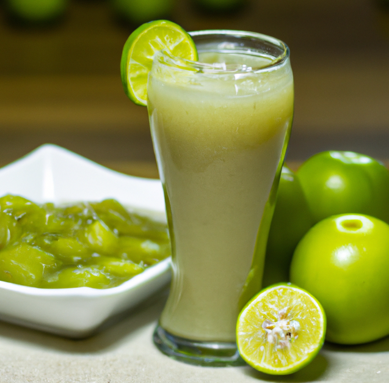
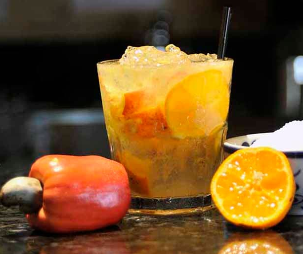
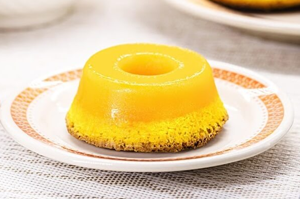
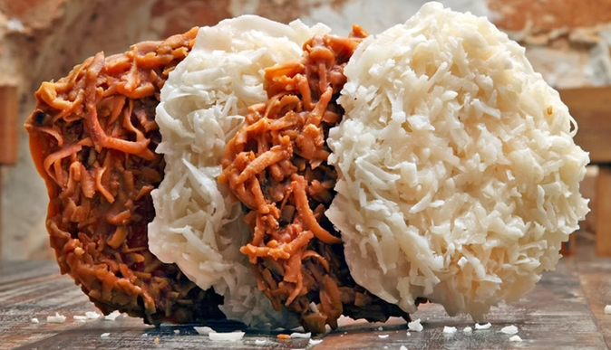
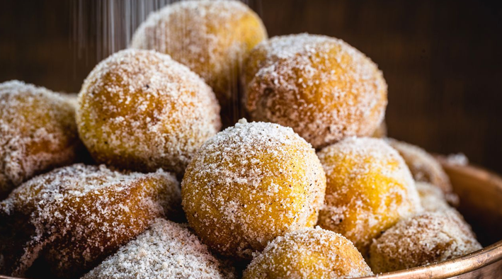

Unidade Salvador
Localizada no coração do centro histórico, nossa unidade no Pelourinho combina o axé da Bahia com os sabores mais autênticos do Nordeste. Em um casarão colonial totalmente revitalizado, oferecemos um ambiente acolhedor, perfeito para saborear um acarajé quentinho ou um bobó cremoso. Escolha seus itens abaixo para retirada rápida na unidade e aproveite nossa terra!
Pratos Deliciosos
Acarajé do Recôncavo (Porção)

Quatro bolinhos de massa de feijão-fradinho fritos no azeite de dendê puro, servidos com vatapá, caruru, camarão e salada de vinagrete.
Bobó de Camarão Individual

Camarões frescos refogados em temperos verdes, misturados a um creme denso de mandioca (macaxeira), leite de coco e azeite de dendê.
Tapioca de Queijo e Carne Seca

Nossa tradicional goma de tapioca recheada com carne seca desfiada e queijo coalho levemente maçaricado, cremoso e saboroso na chapa.
Bebidas Regionalíssimas
Suco Natural de Cacau

Suco feito com a polpa fresca do cacau colhido na região sul da Bahia. Doce na medida certa, cremoso e muito refrescante.
Suco de Umbu

O autêntico sabor do Sertão. Suco feito com a polpa de umbu fresco, trazendo aquele toque inconfundível.
Cajuína Nordestina

Bebida clarficiada à base de suco de caju, rica em tradição, leve, sem gás e servida gelada para refrescar seu dia.
Sobremesas
Quindim do Pelô

Doce tradicional à base de gema de ovos, açúcar e bastante coco ralado fresco. Brilhante por fora, macio por dentro
Cocada Baiana

Fita de coco queimado cozida lentamente na calda de açúcar. Aquela textura perfeita: puxa-puxa por dentro, firme por fora
Bolinho de Estudante

Massa macia frita douradinha envolvida em açúcar e canela. Aquele sabor caseiro: crocante e fofinho sempre.